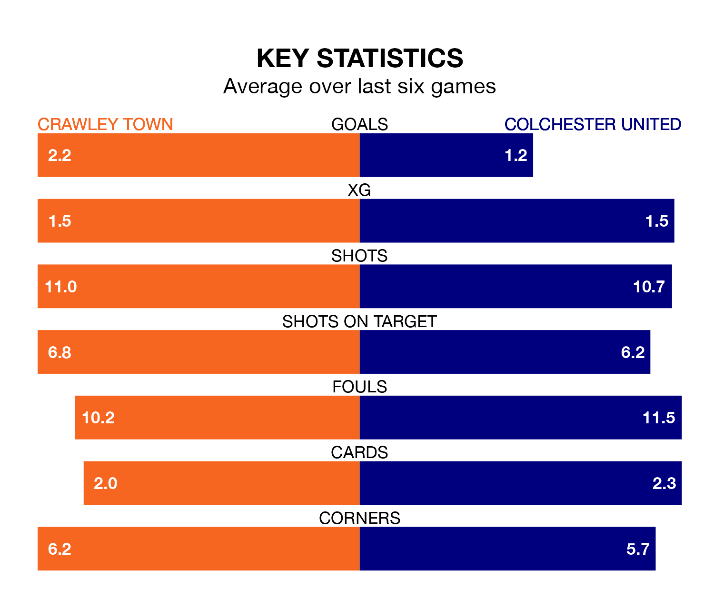

Crawley Town host Colchester United on Saturday at the Broadfield Stadium in EFL League Two.
In their last league match, on Tuesday, Crawley lost to Wrexham 4-1 away, with their goal scored by Klaidi Lolos.
Colchester also lost, 2-1 at home against Stockport County, with Cameron McGeehan scoring their goals.
Colchester are 23rd in the table after 41 games, of which they have won nine and drawn 11, earning 38 points.
Crawley are 16 places ahead of United in seventh, with 20 wins and five draws putting them on 65 points.
In the last 10 years, Crawley and Colchester have played each other on 19 occasions. Crawley won nine of them, Colchester four, and they drew six times.
On average, the Red Devils scored 1.4 goals and the U's 1.2 in those matches.
Their last meeting was on December 9, when Crawley won 2-1 away.
With 52 goals in 41 games so far this season, the U's are scoring at below the league average rate with 1.3 goals per game. And they are conceding more than average, letting in 72 goals at a rate of 1.8 per game.
Town, meanwhile, are above average scorers, with 1.6 goals per game, compared to a league average of 1.5. They have conceded 1.5 goals per game.
The Red Devils are in mixed form in EFL League Two, with three wins and a draw from their last six games.
With a win and three draws over that period, the away side's form is worse – they have taken six points from 18, compared to the hosts' 10.
In Danilo Orsi-Dadamo, Crawley have one of the league's most on-form strikers so far this season. He has notched 17 goals in 41 appearances, to sit seventh in the scoring charts.
His goal rate of one every 209 minutes is slightly quicker than that of Joseph Taylor, Colchester's top scorer with a goal every 178 minutes, and a total of 11 goals in 25 games.
Saturday's match will be refereed by Scott Oldham, who has taken charge of 13 EFL League Two games so far this season, issuing one red card and booking 44 players. He has awarded four penalties.
The last Colchester game Oldham refereed was the 2-1 loss at home against Stockport County on April 9. He is yet to oversee a match featuring Crawley this season.
Updated: 10:01 (UTC), 12/04/24